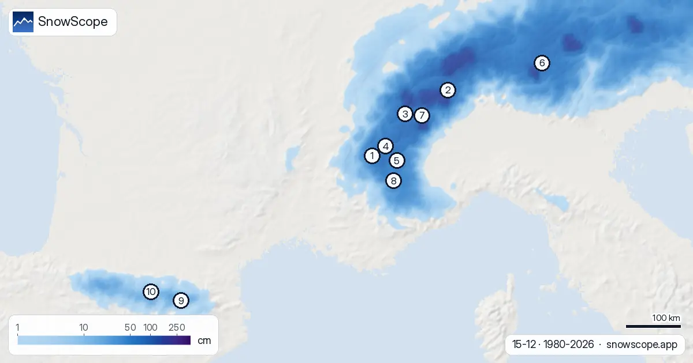

Alpen und Pyrenäen im Dezember: Schnee und Budget im Vergleich
Französische und italienische Grenzorte führen unser Dezember-Ranking 2026 für preiswerte Reisen an. Les 2 Alpes liegt mit 75 cm auf mittlerer Höhe in einem üblichen Dezember und einem 6-Tage-Pass für 266,50 EUR vorn, während Livigno vor dem 18. Dezember 258,50 EUR verlangt. Die Pyrenäen-Gebiete liegen mit wenig Schnee und Tagespässen ohne Preisvorteil auf den letzten Plätzen.
Die Live-Schneeprognose für Les 2 Alpes in der SnowScope-AppSchneehöhen, Pulverschnee-Alarme und 3D-Karte, gratis.So haben wir die zehn Skigebiete verglichen
Wir haben zehn Skigebiete in Frankreich, der Schweiz, Italien, Andorra und Spanien anhand unserer Schneehistorie aus 46 vergangenen Wintern bewertet. Jedes Gebiet wurde an der Talstation, auf mittlerer Höhe und am Gipfel geprüft, zusammen mit den Pistenkilometern und Liften. Die Skipasspreise stammen von den offiziellen Websites für 2026-27, außer bei La Thuile, wo kein Preis auf der offiziellen Seite geprüft wurde. Die Schneewerte teilen die zehn Gebiete in drei klare Gruppen ein.

Schneesichere Spitzenreiter und Grenzgänger
Les 2 Alpes führt unsere Tabelle mit 108 km Pisten und 46 Liften bis auf 3.511 m an. Die 1.284 m Basis ist dünn, mit durchschnittlich 16 cm (0 cm Minimum, 39 cm Maximum) und erreicht in 2 % der vergangenen Winter vom 1.-7. Dezember und 37 % vom 22.-28. Dezember 30 cm oder mehr. Bleib auf mittlerer Höhe (2.397 m), wo es durchschnittlich 75 cm gibt (30 cm Minimum, 140 cm Maximum) und in 46 % der vergangenen Winter vom 1.-7. Dezember, 72 % vom 8.-14. Dezember, 87 % vom 15.-21. Dezember und 91 % vom 22.-28. Dezember 50 cm oder mehr erreicht werden, während der 3.511 m Gipfel durchschnittlich 176 cm (72 cm Minimum, 302 cm Maximum) aufweist. Pässe kosten 68,00 EUR für ein flexibles 1-Tages-Ticket, 266,50 EUR für 6 Tage oder 42 EUR pro Tag am 28.-29. November 2026; der Schnee auf mittlerer Höhe stieg von 63 cm in den ersten 15 Wintern auf 77 cm in den letzten 15 Wintern.
Saas-Fee (48 km Pisten, 30 Lifte) erreicht 3.556 m mit üblichen 68 cm auf mittlerer Höhe (2.668 m; 31 cm Minimum, 113 cm Maximum; Rückgang von 70 cm auf 63 cm), obwohl Pässe CHF 86 für 1 Tag und CHF 419 für 6 Tage kosten. Beim Schnee stechen zwei Grenzorte hervor: Montgenèvre (62 km, 24 Lifte) und La Thuile (79 km, 17 Lifte). Montgenèvre hat durchschnittlich 56 cm an der 1.795 m Basis (22 cm Minimum, 102 cm Maximum) und erreicht bis zum 15.-21. Dezember in 89 % der vergangenen Winter 30 cm oder mehr; die mittlere Höhe stieg von 49 cm in den ersten 15 Wintern auf 76 cm in den letzten 15 Wintern, und ein 1-Tages-Pass kostet bis zum 18. Dezember 2026 45,50 EUR (56,00 EUR ab 19. Dezember oder 301,00 EUR für 6 Tage in der Hochsaison). La Thuile hat durchschnittlich 44 cm an der 1.468 m Basis (17 cm Minimum, 92 cm Maximum) und 67 cm auf mittlerer Höhe, was von 64 cm auf 73 cm stieg.
Gutes Preis-Leistungs-Verhältnis für Mitte Dezember
Valloire-Valmeinier und Vars-Risoul bieten beide 131 km Pisten zu mittleren französischen Preisen. Valloire-Valmeinier (34 Lifte, 2.738 m Gipfel) kostet 54,90 EUR für 1 Tag, 278,50 EUR für 6 Tage oder 20 EUR am 5.-6. Dezember 2026 mit Eislaufbahn-Zugang. Die 1.406 m Basis hat durchschnittlich 29 cm (12 cm Minimum, 58 cm Maximum), während die mittlere Höhe (2.072 m) durchschnittlich 66 cm aufweist (31 cm Minimum, 120 cm Maximum; Anstieg von 55 cm in den ersten 15 Wintern auf 69 cm in den letzten 15 Wintern) und in 43 % der vergangenen Winter vom 1.-7. Dezember, 67 % vom 8.-14. Dezember, 80 % vom 15.-21. Dezember und 87 % vom 22.-28. Dezember 50 cm oder mehr erreicht. Vars-Risoul (38 Lifte, 2.722 m Gipfel) verlangt 58 EUR für 1 Tag und 298 EUR für 6 Tage, mit üblichen 51 cm auf mittlerer Höhe (20 cm Minimum, 97 cm Maximum; Anstieg von 42 cm auf 62 cm).
In Italien hat Livigno (83 km, 37 Lifte) den günstigsten geprüften 6-Tage-Pass für 258,50 EUR vom 28. November bis 18. Dezember 2026 (danach 51,50 EUR pro Tag, 66,00 EUR vom 19. bis 25. Dezember, 74,50 EUR ab 26. Dezember). Die 1.811 m Basis hat durchschnittlich 28 cm (6 cm Minimum, 60 cm Maximum) und die mittlere Höhe (2.301 m) durchschnittlich 48 cm (Anstieg von 39 cm in den ersten 15 Wintern auf 52 cm in den letzten 15 Wintern), bleib also beim 2.791 m Gipfel (übliche 85 cm). Pila (56 km, 16 Lifte) kostet 60,00 EUR für 1 Tag und 322,00 EUR für 6 Tage, mit durchschnittlich 45 cm auf mittlerer Höhe (Anstieg von 42 cm auf 49 cm) und 80 cm auf 2.723 m.
Pyrenäen: wenig Schnee, kein echter Preisvorteil
Grandvalira (137 km Pisten, 53 Lifte) und Baqueira Beret (154 km, 36 Lifte) haben große Gebiete, aber der Dezember-Schnee ist dünn und die Pässe sind nicht günstiger als die meisten Alpenorte der Liste. Grandvaliras 1.674 m Basis hat durchschnittlich 9 cm (0 cm Minimum, 28 cm Maximum) und erreicht ab dem 8.-14. Dezember in nur 7 % der vergangenen Winter 30 cm oder mehr. Die mittlere Höhe (2.146 m) hat durchschnittlich 27 cm (2 cm Minimum, 63 cm Maximum; Anstieg von 21 cm auf 25 cm), während der 2.619 m Gipfel durchschnittlich 45 cm aufweist. Der 1-Tages-Pass für Montag, den 14. Dezember 2026, kostet online 62,50 EUR oder 72,00 EUR an der Kasse.
Baqueira Beret hat durchschnittlich 8 cm an der 1.504 m Basis (0 cm Minimum, 37 cm Maximum), 20 cm auf mittlerer Höhe (2 cm Minimum, 56 cm Maximum; Anstieg von 17 cm auf 20 cm) und 30 cm am 2.600 m Gipfel, was in 39 % der vergangenen Winter vom 1.-7. Dezember und 59 % vom 22.-28. Dezember 30 cm oder mehr erreicht. Pässe kosten 74,00 € für 1 Tag (70,00 € mit der aufladbaren Karte) oder 359,00 € für 6 Tage.
Wähle deine Woche und Höhe
Für Anfang Dezember mit kleinem Budget buche Livigno vor dem 18. Dezember für 258,50 EUR für 6 Tage und fahre an den oberen Liften, oder wähle Montgenèvre für 45,50 EUR pro Tag mit starker 1.795 m Basis. Für den 15.-21. Dezember oder 22.-28. Dezember bieten Les 2 Alpes (266,50 EUR für 6 Tage) und Valloire-Valmeinier (278,50 EUR) tieferen Schnee auf mittlerer Höhe für weniger Geld als Saas-Fee.
Tipps für Skifahrer
- Wähle den 15.-21. Dezember oder 22.-28. Dezember für das Skifahren auf mittlerer Höhe: Valloire-Valmeinier springt von 43 % der vergangenen Winter mit 50 cm oder mehr vom 1.-7. Dezember auf 80 % und 87 % später im Monat.
- Skifahre auf mittlerer Höhe (2.397 m) oder höher in Les 2 Alpes im Dezember, da die 1.284 m Basis nur durchschnittlich 16 cm hat.
- Sichere dir Aktionspässe auf der offiziellen Seite vor dem 18. Dezember 2026 in Montgenèvre (45,50 EUR pro Tag) oder Livigno (258,50 EUR für 6 Tage) und kaufe Grandvalira-Pässe online (62,50 EUR) statt an der Kasse (72,00 EUR).
- Prüfe den lokalen Lawinenlagebericht, bevor du abseits der Pisten auf hohen, windbelasteten Hängen fährst.
Weitere Karten (externe Seiten)
Quellen und Nachweise
- Les 2 Alpes, official ski pass shop, prices 2026-27 www.skipass-2alpes.com/en/pricing
- Les 2 Alpes, official ski pass shop, opening weekend offer www.skipass-2alpes.com/fr/forfaits/ski
- Saas-Fee/Saastal, official ski pass prices 2026-27 www.saas-fee.ch/en/winter-in-the-saas-valley/ski-pass-prices/saas-fee
- Valloire, official ski pass shop (Galibier-Thabor), winter 2026-27 skipass.valloire.com/fr/
- Montgenèvre, official ski pass prices 2026-27 skipass.montgenevre.com/fr/tarifs-guichet
- Livigno, official ski pass price list 2026-27 (PDF) www.livigno.eu/hubfs/tariffe_26-27.pdf
- Pila, official daily ski pass prices 2026-27 pila.it/en/skipass-pila/daily-skipass/
- Risoul, official ski pass page, Forêt Blanche 2026-27 risoul.labellemontagne.com/fr/hiver/forfaits/risoul-foret-blanche/
- Risoul, official 6-day Forêt Blanche pass page 2026-27 risoul.labellemontagne.com/fr/hiver/forfaits/6-jours-foret-blanche/
- Grandvalira, official ski pass booking (online price for 14 December 2026, read 2026-11-13) www.grandvalira.com/en/ski-pass/day
- Baqueira Beret, official prices (tarifas), season 26-27 www.baqueira.es/es/tarifas
- SnowScope, December snow at three heights and today's snow map snowscope.app/
Zu diesen Zahlen
Schneewerte: SnowScope-Schneehistorie, 46 vergangene Winter (1980-81 bis 2025-26) auf drei Höhen jedes Skigebiets (ein höhenkorrigiertes Modell der Vergangenheit: eine Schätzung für eine Fläche, keine Messungen des Skigebiets); Dezemberwerte aus den täglichen Schneehöhen dieser Winter. Aktueller Schnee und Zwei-Wochen-Ausblick: SnowScope-Prognosen (Ausblick aus ECMWF und GFS, eine Spanne, kein Versprechen). Lifte und Pisten: OpenSkiMap-Kartierung. Preise: die offiziellen Seiten unten, gelesen am 2026-11-13; Preise können sich ändern, vor der Buchung prüfen.
Diesen Bericht zitieren
Für Forschung, Lehre oder Presse: Zahlen und Grafiken sind unter CC BY 4.0 mit dieser Quellenangabe frei nutzbar.
SnowScope (2026), Alpen und Pyrenäen im Dezember: Schnee und Budget im Vergleich, https://snowscope.app/blog/de/2026/11/western-europe-december-ski-budget-10-resorts-compared-2026.html, abgerufen am 2026-11-14
SnowScope (Atlas Labs). (2026, November 14). Alpen und Pyrenäen im Dezember: Schnee und Budget im Vergleich. SnowScope snow reports. https://snowscope.app/blog/de/2026/11/western-europe-december-ski-budget-10-resorts-compared-2026.html
BibTeX
@misc{snowscope2026westerneuropedecemberski,
author = {{SnowScope (Atlas Labs)}},
title = {Alpen und Pyrenäen im Dezember: Schnee und Budget im Vergleich},
year = {2026},
month = nov,
howpublished = {\url{https://snowscope.app/blog/de/2026/11/western-europe-december-ski-budget-10-resorts-compared-2026.html}},
note = {Published 2026-11-14 20:11 UTC; accessed 2026-11-14}
}· CC BY 4.0 · Methoden, Daten und Werkzeuge →
Les 2 Alpes: Schnee und Temperatur nach Höhe, dieser Winter vs letzter (Werkzeuge) →
Les 2 Alpes folgen
Gratis: eine Nachricht, wenn Neuschnee kommt, und jeden Morgen die Vorhersage.
Weitere Schneeberichte

Die Lifte in Saas-Fee erreichen 3.556 m, wo unsere Schnee-Historie zeigt, dass 100 % der vergangenen Winter bis Mitte Dezember mindestens 30 cm Schnee hatten.

Pila oberhalb von Aosta bietet einen günstigen Tagesskipass für 60,00 EUR und zuverlässigen Schnee im Dezember auf den oberen Pisten.

Fahr Ski in Livigno für 51,50 EUR pro Tag vor dem 18. Dezember, wenn der Schnee am Gipfel in 100 % der vergangenen Winter 30 cm erreicht.